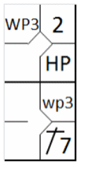
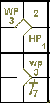
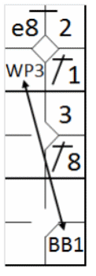
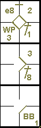

Ball lodges in the umpire’s or catcher’s mask or paraphernalia.
The ball becomes dead and runners advance one base, or return to their bases, without liability
to be put out, when … a pitched ball lodges in the umpire’s or catcher’s mask or paraphernalia, and remains out of play;
runners advance one base
[OBR 5.06(c)(7)].
The same rule states that if the pitch is the third strike with two outs or the fourth ball, the
batter is also awarded first base. If less than two outs and the pitch is the third strike, the batter is out.
Example 108:
With first and second bases occupied, and one ball and one strike to the batter, the wild pitch lodges in the
catcher’s mask, and the runners advance one base while the batter remains in the box to play out his turn.
He is awarded a ball or a strike depending on the umpire’s call. The advances are recorded with the abbreviation
for wild pitch.
|

|
action {
batter -> HP
}
action {
batter -> 1B7
,
runner1 -> +
}
action {
runner1 -> wp
,
runner2 -> WP
}
|

|
It is also possible the ball lodges in the catcher’s mask after a passed ball; in this case use the
symbol for passed ball.
Example 109:
With two out, third and first bases occupied and two balls and two strikes to the batter.
The pitched ball, a wild pitch or a passed ball, lodges in the umpire’s clothing and is called the third strike.
The batter is therefore awarded first base and the runners are allowed to advance one base. Use the scoring symbol
according to the situation for wild pitch or passed ball.

|
action {
batter -> 1B1b
}
action {
batter -> 1B7
,
runner1 -> ++
}
action {
batter -> KSPB
,
runner1 -> pb
,
runner3 -> pb
}
|

|
ATTENTION: When the pitch in question is judged to be the fourth ball, the batter is awarded a
normal base on balls. It follows that any forced advances by runners are considered a consequence of the base on balls.
Example 110:
With first and third bases occupied and the count at three balls and one strike, the ball lodges in the umpire’s
clothing due to a wild pitch or passed ball. In this situation, the pitch is considered the fourth ball and the batter
is awarded first base.
The advance by the runner on third base is recorded with “WP” or “PB” as he was not forced and the batter was third
in the batting order.
The runner on first base, who would have advanced to second in any case as a result of the base on balls, is marked
with the batting order number of the batter, since this is a normal forced advance.
|

|
action {
batter -> 1B1
}
action {
batter -> 1B8
,
runner1 -> + e8
}
action {
batter -> BB
,
runner1 -> +
,
runner3 -> WP
}
|

|